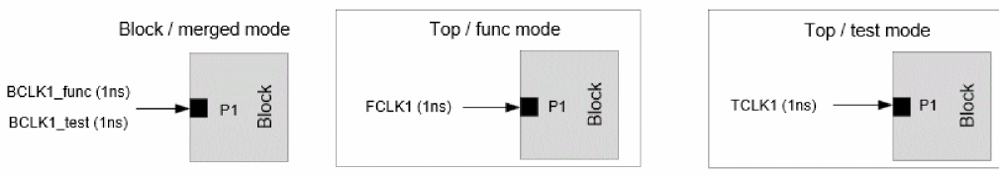

Merge Mode Context Analysis
When top level analysis is performed as SMSC analysis for each constraints mode (e.g., functional and test modes), but block analysis is performed using merged mode constraints, Tempus supports reading individual constraint mode contexts in merged mode context analysis. The merge mode context analysis is only supported with port-based clock mapping mode (when timing_context_port_based_clock_mapping is set to true).
The contexts corresponding to the multiple modes can be specified using the read_timing_context -merge parameter. The -view_map_file parameter should be used to provide mapping information of corresponding top/block views. You can map more than 2 top views (corresponding to the individual mode analysis) to the same block view (corresponding to merged mode analysis). See example below:
read_timing_context -merge {top_testmodeview.context top_funcmodeview.context} -view_map_file view_map.tcl
The contents of view map file view_map.tcl are shown below:
set_timing_context_view_mapping -top_view top_funcmodeview -block_view block_mergedmodeview
set_timing_context_view_mapping -top_view top_testmodeview -block_view block_mergedmodeview
top_testmodeview.context is context corresponding to top level test mode view, and top_funcmodeview.context is context corresponding to top level functional mode view.
Both the functional and test mode clocks are expected to be retained in the merged mode block constraints (even if the clocks are defined on the same port). The physically exclusive clock group specification is needed between functional and test mode clocks in merged mode block constraints to ensure correlation to flat analysis.
The merged mode context analysis is supported with both SMSC and MMMC block/top level analysis.
set_timing_context_view_mapping set_timing_context_view_mapping command must be specified in a view mapping file and subsequently loaded into the Tempus environment using the following command:read_timing_context - view_map_file <file>
This command should not be executed as a separate command without enclosing it in the mapping file.
Clock Mapping Approach
The block clocks defined on a port will be attempted to map to top clocks (from top level modes on the same port) using port-based clock mapping approach. The clock mapping approach will be the same for both clock and data phases.
As shown in the example below, the top clock FCLK1 will be mapped to block clock BCLK1 at port P1 and TCLK2 will be mapped to BCLK2 at port P2.

If a block clock at a port can be mapped to top clocks from multiple top level modes, this block clock will remain unmapped, as shown in the figure below.

In this case, the block clocks BCLK1/BCLK2 and top clocks FCLK1/TCLK1 will remain unmapped at port P1.
The manual clock mapping can be specified in case the clocks are not auto mapped. The manual mapping allows mapping top clocks from different modes to the block clock. In the above example, the block clocks BCLK1/BCLK2 can be manually mapped to top clocks FCLK1/TCLK1.
In some of the merged mode constraints, the block clock names can have unique suffix to indicate the top level mode the clock corresponds to. Tempus allows specification of suffix for block clock names using the -block_clock_suffix parameter as shown below:
set_timing_context_view_mapping -top_view testview -block_view blockview -block_clock_suffix "_test"
set_timing_context_view_mapping -top_view funcview -block_view blockview -block_clock_suffix "_func"
The block clocks with clock suffix _test will only be mapped to top clocks from testview and block clocks with clock suffix _func will only be mapped to top clocks from funcview.

In the above case when _func and _test suffix is specified, the BCLK1_func will be mapped to FCLK1 and BCLK1_test will be mapped to TCLK1.
When a suffix is user-specified, and if some block clocks do not have the specified suffix, then those block clocks without the suffix will remain unmapped.
The case value from the top level contexts will be retained on a port only if the case value matches for all the top level modes. The case value will be dropped in context analysis if there is a mismatch in case value.
Return to top